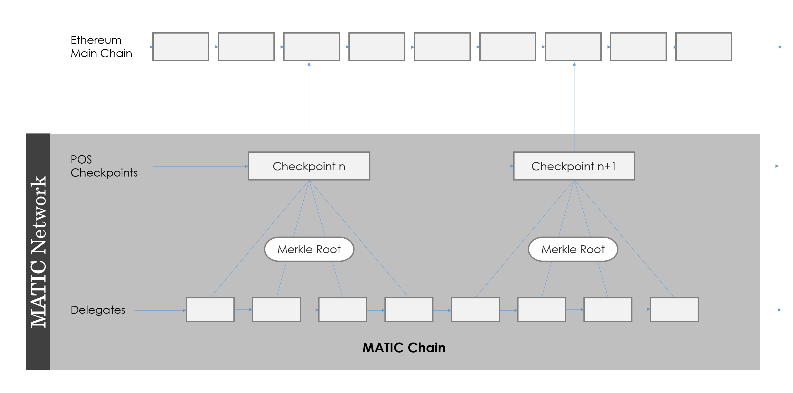

Matic Whitepaper
Jaynti Kanani <jdkanani@matic.network>
Sandeep Nailwal <sandeep@matic.network>
Anurag Arjun <anurag@matic.network>
Abstract
On the other hand there are a few smart contract platforms which boast of higher transaction throughput but they trade off the transaction speed with decentralization. Also many of the upcoming solutions propose their own blockchains neglecting the billions of dollars market cap DApps and other projects already created on platforms like Ethereum etc. Even more importantly they neglect the massive developer community and developer ecosystem that exists for platforms like Ethereum.
Matic Network strives to solve the scalability and usability issues while not compromising on decentralization and leveraging existing developer community and ecosystem. It is built on the foundation of Plasma framework as an side chain scaling solution for existing platforms and provide scalability and superior user experience to Dapps/user functionalities.
We have chosen Ethereum as the first platform to showcase our scalability and we already have a working implementation for Ethereum on Kovan Testnet. It allows instant transfers, exchange and conversion of digital assets (e.g. crypto tokens) and cryptocurrencies in future (Bitcoin using other stable coin protocols). It’s an adapted implementation of Plasma framework for Ethereum to start with but our “vision” is to provide off/side chain scaling solution for blockchains in general. Matic foundation intends to provide Matic wallet, payment APIs SDKs, products, identity solutions and other enabling solutions that will allow developers to design, implement and migrate DAPPs built on base platforms like Ethereum. One of the key pillars of Matic Network’s ideology is user experience which is very poor for Blockchain applications as of now. Matic Team has already built high quality user experience Mobile/Web browser libraries which will enable businesses to create real world end user applications at large scales. Matic roadmap also includes supporting cross-chain transfers and third party Decentralized exchanges, liquidity pools etc.
Why Matic?
Decentralized Apps are getting proposed in large numbers but the current blockchain ecosystem is not prepared to scale as per the demands of a mass adopted end user applications. Moreover the user experience of Dapps is very poor and no where conducive for average users. Slow block confirmations, High transaction fees, low scalability and poor user experience are some of key roadblocks for the mass adoption of blockchain applications. Following section explains the problems prevailing in the current blockchain ecosystem and how matic network intends to solve them.A detailed technical specification is provided in the further sections of the white paper.
Slow Transactions
Blockchain transactions are very slow and have a very limited throughput. Most PoW based blockchain protocols have a limit on the block size and it takes a certain amount of time to generate a block. Each transaction also has to wait for multiple block confirmations due to potential chain re-organizations.
PoS based blockchains try to counter these limitations using staking mechanism but those who are able to achieve high throughput are able to do so at the cost of decentralization. These limitations are often necessary for public blockchains to ensure security and decentralization as a block needs to be propagated through the network and validated by all the nodes to achieve finality.
Matic solves this problem by using a high throughput DPoS chain with a selected set of Delegates. It then uses a Proof Of Stake layer to validate the blocks and publish periodic proofs (merkle roots) of the blocks produced by
to the Ethereum mainchain. This helps in achieving high level of decentralization while maintaining an extremely fast (< 2 seconds) block confirmation times.
Low Transaction Throughput
Public blockchains have to maintain a certain amount of time lag between various block production so as to ensure ample time for block propagation. Also the blocks size needs to be low so as to ensure quick propagation of the block through the network. This entails that number of transactions in a particular block needs to be fairly limited.
Matic Network solves this problem by using a Delegate layer from its DPoS system to produce the blocks. Delegates enable the system to produce blocks at a very fast rate. The system ensures decentralization using PoS checkpoints which are pushed to the Mainchain (Ethereum as a first chain),. This enables Matic to theoretically achieve 2^16 transactions on a single side chain.
Scalability
As discussed in the previous section that Matic network easily achieves a theoretical speed of 2^16 transactions per second. In future, Matic platform can easily add more side chains horizontally to increase the total number of transactions on the Matic chain while using the same decentralized PoS layer.
Theoretically we can add millions of transactions per second using multiple side chains. Also, the mechanism to do that is already there with the first Matic side-chain and new chains can be added readily.
Size of Blockchain
Each block on Blockchain must be validated by multiple nodes and/or compute state in case of smart contract based blockchain.
Each node has to manage a copy of state and blocks. While the chain is increasing as days go by, maintaining and validating the whole blockchain is getting more difficult resulting in fewer full nodes of public blockchains which is becoming a risk for decentralization.
For Matic Network, the primary layer which provides decentralization may choose to have only the blocks of Matic chain from previous checkpoint to the next checkpoint. All previous transaction/block proofs are anyways submitted to the mainchain. It enables extremely low fidelity PoS nodes which can be run in very low cost machines with low storage. In future, Matic network intends to enable Mobile devices based PoS miners too.
Multiple micropayment channels with other off-chain solutions
Some Payment channel solutions solve the problem of micro-payments. However, opening and managing channels with multiple DApps or users is complex and is a very bad user experience. Additionally, speed and convenience of mediated payments over channels are questionable.
Since Matic network uses a state based architecture on an EVM, it doesn’t require payment channels to be opened between two parties. If fact, any valid ethereum address is a valid Matic Address and receivers do not need to be on Matic chain to receive funds. They would only need to have a Matic wallet when they want to withdraw the funds to the main chain or spend it in the Matic ecosystem.
High Transaction Fees
With the rapid growth of Blockchain ecosystem, new crypto assets are increasingly being introduced, transferred, and exchanged between users in the form of crypto tokens. Also most decentralized apps have its own token and economy. Paying tokens for the services or doing any kind of transaction on blockchains it requires on-chain transfers. Every blockchain has a transaction cost structure for example Ethereum charges gas fees on each transaction.
Fees are the important factor to reward validators and prevent certain kind of security attacks like DoS. But, the problem is fees varies depending upon the pending transaction pool due to the limited block size.
Matic Network enables low cost transactions by achieving economies of scale by doing large number of transactions on the Delegate layer which ensures low cost and then batching the proofs of the matic blocks using Merkle root of the blocks to the highly decentralized mainchain (for ex. Ethereum) using a decentralized layer of PoS Stakers.
Poor Usability
The user interactions on decentralized applications are extremely poor compared to their centralized counterparts. In order for Decentralization revolution to achieve mass adoption the user experience of decentralized apps have to be at par with,if not better than the centralized applications.
Matic network is working on leading projects for Mobile and web browser integration tools and is pioneering protocols in this domain. It intends to build a ubiquitous mobile/browser app which will act as a secured interaction layer for blockchain interactions. We will be publishing the designs and prototype of the same soon.
Introducing Matic Network
As discussed in brief in the section above Matic Network solves the problems by building a decentralized platform using an adapted version of Plasma framework that provides a solution for faster and extremely low cost transactions with finality on a mainchain. Our current working Testnet and alpha-mainnet works with Ethereum as a mainchain.
We are also building product ecosystem including user friendly mobile apps, desktop wallets and browser extensions which will provide a seamless experience for all users. So that users will be able to pay, transfer or hold crypto assets without worrying about the complexity of the underlying system.
Architecture
When a user is transferring ETH or ERC20 tokens, they have to wait for block confirmation times which ranges from 14 seconds to 20 seconds. Also you have to wait for multiple blocks to be sure of the finality of the block inclusion in the chain. Let’s say you are buying a coffee or paying tokens to watch a movie. On each transaction ay you are not only paying fees but also wait for it to get confirmed. That’s deterrent for users to use the service.
Moreover during peak loads large number of transactions clog the Ethereum network and gas fees increases on each transaction to get faster confirmations.. We propose Matic as a solution to overcome these problems.
Here are steps how Matic will work:
- User deposits crypto assets in Matic contract on mainchain (currently implemented with Ethereum blockchain only)
- Once deposited tokens get confirmed on the main chain, tokens will appear on the Matic chain using Matic Deposit bridge (technical details explained in a dedicated section below).
- The user can now transfer tokens to anyone they want almost instantly (Matic chain has faster blocks (approximately 1 second or less)) with an almost negligible fees.
- Whenever user wishes to, they can withdraw tokens to the main Ethereum chain by establishing proof of remaining tokens on Root contract (contract deployed on Ethereum chain)
Remember any fungible crypto assets can be represented as ERC20 tokens on Matic chain. That way, the same method will work for any fungible crypto assets.
We have already created demo version and you can check out our contracts on GitHub:
https://github.com/maticnetwork/contracts
We expect the alpha version of the mainnet to go live very soon.
Actors
Matic ecosystem will have the following actors :
- End Users
- The Dapp developers : Developers will be the businesses who would be using Matic to scale their applications and provide a better UI/UX to their end users
- Stakers : The stakers will play a very important role in the Matic Network. These stakers validate the transactions and propose checkpoints on the mainchain using PoS consensus mechanism with ⅔ majority. They also choose Delegates amongst themselves which satisfy a certain criteria to act as block producers.
- Delegates : These are block producers chosen by Stakers who enable faster blockchain generation times. They also have to provide a large stake as well as go satisfy various criteria such as KYC to be nominated as delegates.
Consensus and Security
Matic uses dual strategy of Proof of Stake at the checkpointing layer and Delegates at the to achieve the faster blocktimes while ensuring high degree of decentralization by achieving finality on the main chains using the checkpoints and fraud proofs.

Basically, Anyone can stake their Matic tokens on root contract to become a Staker in the PoS checkpointing layer(contract deployed on Ethereum chain). This provides a high degree decentralized base layer for Matic chain.
Now, At the Matic block layer we have Delegates selected by PoS Stakers on the base layer with Proof of Solvency who will be creating the Matic Blocks. To achieve faster block generation times these Delegates will be low in number. This layer will achieve < 2 second block generation times at extremely low to negligible transaction fees.
On Matic network’s checkpointing layer, basis our PoS mechanism, every few blocks on Matic block layer, a proposer will be chosen among the stakeholders to propose a checkpoint on the main chain. These checkpoints are created by proposer after validating all the blocks on the Matic block layer and creating the merkel tree of the block hashes since the last checkpoint. The merkle root is then broadcasted to the staker network for their signatures. The other stakeholders also verify the proof. They approve the proposed block, if it’s valid, by providing their signatures. The system needs ⅔ approvals of stakeholders be to propose “header block” to root contract. Once the checkpoint is proposed on the mainchain, anyone on the Ethereum mainchain can challenge the proposed checkpoint till a specified period of time. If no one challenges it till the passing of the challenge period, the checkpoint is formally included as a valid checkpoint on the main chain.
Apart from providing finality on the mainchain, Checkpoints have a very important role to play in withdrawals as they contain the proof-of-burn of tokens in the event of user withdrawal. It enables the users to prove their remaining tokens on root contract using Patricia Merkle proof and header block proof. Note that to prove remaining tokens, header block must be committed to Root Chain through PoS (Stakeholders). Withdraw process will take Ethereum gas fees as usual.
Through this mechanism, we achieve high transaction speed, high degree of decentralization and finality on Mainchain. In our first version which has Ethereum only as the base chain, Ethereum root contract enforces solvency and finality through header block(checkpoints) very efficiently.
Fraud Proofs
To enhance the security of the transactions, Matic Network also provides Fraud Proofs on the mainchain. This contract enables any individual on the mainchain to submit the details of the transactions which he/she thinks is fraudulent. If the challenge is successful, the stakes of the parties involved in the fraud are slashed and the challenger receives the slashed funds as an incentive to detect the fraud. This can be considered an ever running high reward bounty program for any parties who want to investigate the veracity of the transactions on the Matic Network.
Matic Stack
This section details out various parts of the Matic chain and its setup over Ethereum chain.
Matic Deposit Bridge
The Matic bridge(s) are part of Delegate nodes and listen to the RootContract events on the mainchain and monitor any token/ether transfer events happening to the RootContract. The bridge does it using Matic Network’s famous tool named Dagger. Once the bridge detects a deposit on the main chain they fire a Deposit event on the Matic chain and the user’s Matic address is allocated the deposited amount.
Matic POS Chain
The Matic checkpointing layer is a PoS blockchain which has Stakers who propose the checkpoints to the mainchain.
Currently there can be roughly upto 100 Stakers can be there at the checkpointing layer. In future with advent of more efficient signatures on Ethereum blockchain we would be able to significantly increase the number of stakers on the checkpointing layer which will further increase its degree of decentralization, perhaps equal or more to that of the leading public blockchains like Ethereum and Bitcoin.
More details of the PoS checkpoint layers in the version 2.0 of the Whitepaper.
DPoS Layer
At the lowest layer we have Delegate nodes chosen by a DPoS mechanism where the Stakers of the PoS layer will choose these Delegates by voting. These Delegates would also be required to have proof of solvency and KYC to be nominated for Delegates. These Delegates will also run the Matic Deposit bridge.
More technical code level details of DPoS layer will be added in version 2.0 of whitepaper.
Matic VM
Matic uses standard EVM which is run by the Delegate nodes to generate blocks. Using the EVM allows Matic to be able to build and deploy protocols like ERC protocols as well as other protocols like Kyber Network, ZRX etc.
Matic Withdrawal Bridge
When a Matic address submits a withdrawal request on Matic network, the tokens are burnt on the Matic chain and this transaction is pushed on to the Matic chain. After specified checkpoint interval the PoS checkpoint layer will publish the the checkpoint to the main chain which will include the proof of burn of these tokens on the Matic chain. Once this checkpoint is committed on the mainchain the user can claim their withdrawn tokens.
Spam Protection
The Delegates running the block generation layer of Matic network watch the transfer state of the assets to identify the frivolous transactions. They reject any incoming transactions with zero amount in payments thereby foiling any DoS/spams attacks with zero cost transactions. Even if the Matic tokens are very low in cost and the fees are very low, due to the high TPS of Matic Network it would not be economically viable to run sustained DoS attacks on the Matic Network.
Gas Strcuture
The Matic chain uses the EVM on the mainchain with Geth node. The configuration on the geth nodes is setup with 0 gas. The mechanism to protect DDoS attacks using this configuration has been detailed in the Risks section.
Network Economics
Detailed Network economics along with the scenarios to be added soon.
Focus on User Experience
Detailed account of how matic looks at improving the User Experience of Dapps will be updated soon.
Potential Use Cases
Matic foundation is committed to provide a, scalable and user friendly ecosystem for third party Decentralized Applications to thrive on. Matic Network foundation like Ethereum and other platform Foundations will promote various Base chain Dapps(like Dapps built Ethereum currently, and NEO,EOS in future) to build and migrate their user facing applications/transactions on Matic Network. It will also award grants and funding to third party app developers to build various user cases on top of Matic Network like :
Payments
Matic will provide an interface for users and payment APIs and SDKs for DApps, merchant, and users to instantly accept or pay in crypto assets (e.g., ERC20 tokens, Ethers).
We have plans to roll-out this system in three phases:
- Ethereum and ERC20 token payments
- Multi-asset cross chain transfer and payment through atomic swaps and liquidity providers
- Fiat enabled payment system through fiat liquidity providers
Atomic Swaps
Matic smart contract will allow users to pay with any crypto token they prefer and receiver will receive payment in assets they prefer. Matic will handle conversation through atomic swap between cross-chain crypto assets.
Liquidity providers
The network will exchange any tokens for targeted tokens by leveraging 0x liquidity pool or other liquidity providers while transferring crypto assets. In case of fiat, we are planning to collaborate with fiat liquidity providers in major country currencies.
Decentralized Exchange (DEX)
Matic has all characteristics which one exchange should have — faster and cheaper trades. Matic will provide decentralized exchange and enables trust-less, reliable and easy crypto trades. The decentralized exchange is the future for digital assets and provides better security and solvency instead of centralized exchanges.
As Matic doesn’t have the burden of gas like Ethereum chain, it would be pretty easy to do the atomic swaps like BTC <> ETH or any other blockchain assets.
Lending & Credit Scoring platform
The Matic Network will enable merchants to assess the creditworthiness of connected users via their transaction history. This enables merchants to lend tokens to users on the network when transacting with users that do not have sufficient funds. This will use Dharma protocol to provide tokenized debt to users.
Identity
Users need a utilitarian yet user-friendly interface where MetaMask or web3 enabled browsers are not required. They don’t need to think or understand how Ethereum works under the hood.
Decentralized apps need a way to sign transactions, but that must happen without submitting private keys on each DApp on web browsers or mobile apps. We believe user must have control over their private keys without worrying about the security. Matic will solve that with an Open-Identity system and will deliver a seamless experience to our users.
This system will also provide a way to auto-approve certain kind of transactions depending upon criteria users choose. This will drive Matic’s recurring payments.
Securing Personal Data
Building upon our Identity feature, we will enable users to secure their personal data on the Identity chain. This data will be encrypted and queried using zero-knowledge proofs only, thereby limiting access to sensitive, personal data by external services.
Currently, each third-party service stores data in their servers for each customer, which poses the tremendous security risk for the users in case of a data breach, as well as huge reputational risks for the service. Matic will reduce the need to have user personal data shared with each service, and provide a tiered, auditable mechanism to track sharing of personal data. Businesses will also find that storing less personal data reduces the overall cost of maintaining user data securely.
Currently, most users don’t even know the extent of data that is shared with publishers and how much value they lose in trading convenience or free application usage for their personal data. Matic will enable easy porting of data from third-party services to the Identity chain, wherein even Matic will not have access to the personal data.
Users can also choose to share their data with publishers in a much more transparent manner, and can also look to monetize the usage of their data by charging a sharing fee. This could be done via a multi-tier sharing mechanism, with data such as location tracking being offered a higher fee, etc.
Infrastructure
The Matic will act on the simple mantra - make it simple and seamless. For that, We will provide new infrastructure around Matic Network including user-friendly wallets for individual users and merchants, payroll dashboard, payment SDKs and other open source tools.
Dagger
We have already started building infrastructure for developers, starting with Dagger. Dagger is a tool or engine to track Ethereum accounts and events in real-time.
Developers can use Dagger to track their own smart contracts, accounts, and transactions. They can create custom service or integrate with third-party services through IFTTT or Zapier.
You can learn more about dagger here:
https://medium.com/matic-network/ethereum-in-realtime-dagger-98ee2d717c76
and check how it works:
https://medium.com/matic-network/understanding-dagger-453d90480c51
Challenges, security concerns and mitigation
Block withhold after deposit or deposit is not processed by delegate due to unavailability of matic-bridge.
(a) Each deposit will create new id (uint256 counter) associated with deposit even
(b) Delegate must process deposit in next 5 checkpoint
(c) If not processed, deposit amount will be eligible for withdrawBlock withhold after deposit, relay and before transfer
There are two ways we can solve this:
(a) “Withdraw only” mode: Matic can go in withdraw only mode after certain time with no checkpoints (~ around 2 days). All users must start exist process by proving tokens from last known checkpoints. Problem with this approach would be “loss of valid transactions from last checkpoints”
(b) Start ceremony to choose next set of Delegates: ceremony will start to select next round of delegates and selected delegates will resume chain from last checkpoints and start validating pending transactions (if any)Checkpoint withhold after burn tokens on Matic
(a) This will only happen when there is fraud on Matic chain. Mitigation would be the same as 2.A Delegate changes token balance while relaying deposits.
(a) Mitigation would be the same as 2.A Delegate changes token balance while transfer.
(a) Mitigation would be the same as 2.A Delegate generates token for particular address
(a) Mitigation would be the same as 2.A Delegate generates, transfers and burns tokens between in two checkpoints
(a) Mitigation would be the same as 2.A rationale of how a Delegate can be trustless entity (eventually on our roadmap)
(a) Use appcoin security for Delegate collateral and discourage Matic token damaging + short sellingMake Solvency Proof mandatory before assigning one as a delegate. Richman can game with this Solvency Proof but appcoin above will mitigate attacking chain
Validator-level censorship can be mitigated via forcing delegate to include TX in next 5 (or so) checkpoints
If government gets to know who is maintaining Matic chain and ban that entity’s activity, slash that node and choose alternative from outside of that country
Discrepancy between users’ balances and root contract’s total balances
At given point of the time, what if there is a discrepancy between total of users’ balances and root contract’s total balances? What if root contract allows certain users to withdraw more tokens than intended (possible hack)? How one can detect that there has been hack or fraud on Matic system?
Solvency proof of balances comes handy in this case. More info on solvency proof and single use seals -
https://petertodd.org/2016/commitments-and-single-use-sealsTransaction censorship
To resolve this, possible solution could be following:
Anyone can add transaction data directly to main chain contract. That transaction must be added in next 5 checkpoints by delegates.
Now following will happen next:
(i) If delegate doesn’t include tx in next 5 checkpoints, tx owner can start challenge by keeping some ETH as value (some kind of bond). After certain amount of time, delegate won’t be able to produce inclusion proof, and that’s why delegates get slashed and tx owner will get slashed amount + bond (passed in challenge)
(ii) If delegate includes tx but tx owner decides to mess with delegate - in that case, delegate produces inclusion proof and delegate get bond amount created by tx owner.DDoS
(a) One way to prevent DDoS is to check state validation when user submits the transaction (before tx goes to pending pool)
(b) Node must handle state check validation part while accepting transactions. If any node decides to skip this implementation, other nodes will ignore all future transactions from particular node.
Future Research Directions
- Generalized states and fraud proofs for the same.
- Evaluate the approach to expand Staker base in the checkpointing layer with the future Threshold based signatures implementations on Ethereum, if any.
- Robust structure and design pattern for upgradable smart contracts.
Team
- Jaynti Kanani. Co-founder. Contributor to Web3, Plasma, Walletconnect. Previously data scientist at Housing.com.
https://www.linkedin.com/in/jdkanani/ - Anurag Arjun. Co-founder. Fintech product guy. Previously AVP (Product Management), IRIS Business.
https://www.linkedin.com/in/anuragarjun/ - Sandeep Nailwal. Co-founder. Blockchain Programmer and Entrepreneur. Previously CEO Scopeweaver, CTO (Ecommerce) Welspun Group.
https://www.linkedin.com/in/sandeep-nailwal-60709a33/